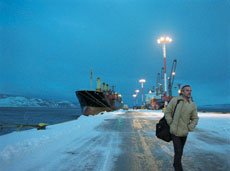

|
LIVERPOOL
Lisandro Alonso | ARG/F/NL/SP/GER 2008 | 84 min.
Material: 35mm
Format: 35mm
Original language: Spanish
Script: Lisandro Alonso, Salvador Roselli
Camera: Lucio Bonelli
Sound: Catriel Vildosola
Editing: Lisandro Alonso, Fernando Epstein
et al.
With Juan Fernandez, Giselle Irrazabal, Nieves Cabrera
Production: 4L, Fortuna Films, Slot Machine
Co-Production: Eddie Saeta, Black Forest Films
Print/Sales: The Match Factory GmBH
LIVERPOOL starts on board of a large ship on its way to the Argentine Ushuaia, the most southern city in the world. One of the sailors is Farrel, who tells the captain that he wants to take some leave there in order to visit his mother, whom he hasn't seen for 20 years. He disembarks and, like earlier heroes in Alonso's films, sets off on his journey. The alcoholic Farrel keeps himself warm with booze and falls asleep occasionally in strange places. Once he arrives in the hamlet at the end of the world, he finds his mother needy and dying, and he turns out to have a daughter too. LIVERPOOL has a rather more complex narrative structure than Alonso's earlier films. The film doesn't end when Farrel reaches his destination. Nor does it end when the protagonist leaves again. And the sketch of the microcosm of the remote village is very hectic in Alonso's terms. – Gerwin Tamsma
Lisandro Alonso, born in 1975 in Buenos Aires, Argentina. He studied for three years at the local Universidad del Ciné. In 1995 he wrote and directed the short film DOS EN LA VEREDA with Catriel Vildosola. In 2003 he founded his own production company 4L. He received several prizes for his feature films at international festivals
Films: Dos en la vereda 1995 | La Líbertad 2001 | Los Muertos 2004 | Fantasma 2006 | Liverpool 2008
back
|